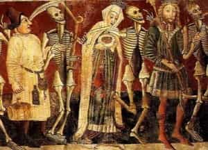

< < < Back
How Acknowledging Death Can Improve Your Life – Return Of Kings
Life’s only certainty: one day you will die.
It might be this afternoon. It might be a century from now. You might see it coming in the form of a looming bus or you might hear its approach in a doctor’s calmly professional diagnosis. It could strike you from behind like a bullet in back of your head, your last thought being whether you need to get milk on the way home. It might come in your sleep, your morning alarm left unheard and a tab of midget porn left open for your loved ones to find. We’re all moving in different directions but we will all arrive, eventually, at the same destination.
Taboo

Death is one of the very, very few taboos left in Western societies. You can mention sex change operations, furries, cervical cancer, divorce or personal finances at the most refined dinner parties, but even mentioning death while down at the pub with a few mates is considered uncouth.
Why? Do we think that by not talking about it, Death will forget about us? Do we think that mentioning his name, like Voldemort, will stir him from his slumber and increase his power? More likely, people think that death is so utterly horrible that opening expressing its inevitability or potential circumstances simply darkens the mood and detracts from what little happiness we may grab from life before it is forever taken back. Many people refuse to even think about death, let alone talk about it. They perhaps fear that its dark countenance, once entertained, will haunt their every moment and make their already troubled lives impossible. Indeed, many readers will have avoided this article for the reasons described.
But you and I are still here. So, let’s talk about death. Talking about it, that is—only the dead know what the actual thing is like and they’re not here to tell us.
The Nature Of Death
What is death? If you have a religious conception of death then so be it. For the rest of us, death is the permanent end of our consciousness and therefore our existence. What is it like, to not exist? You already know. You’ve experienced it before. The universe existed for almost 14 billion years before you kicked and howled your way into it. What was it like, not existing for all that time? However it was, we can assume that slipping back into non-existence will be much the same. Is that something a rational person ought to be afraid of?
Perhaps non-existence might not scare you, but the moment of death does. The awesome instant when, if conscious, you realize that it is all over. The experience of the final seconds of life is something we know about from those who thought they were going to die, but survived. We can read about these near-death experiences and they do not seem so utterly terrible. Certainly nothing to keep you awake at night.
The Horror Of Immortality
What is worse than death? The only thing we can compare it to is its alternative: immortality. Imagine that you could not die. You live for centuries, like a character in an Anne Rice novel, watching your friends and relatives grow old and die, seeing ages come and go. It sounds pretty interesting. But what about living thousands of years into the future, when life becomes unrecognizable? Millions of years into the future, when humans, if they still exist, may have taken on a totally different form? Surely you would be lonely. Billions of years in the future, when the Earth has plunged into the sun? When the universe itself either fades out or crushes back into a singularity? What on earth would you do with yourself?
Perhaps future humans might invent a form of limited immortality by preserving their consciousness in a more durable, electronic format, with a non-physical environment to go with it. This carries its own risks. Watch this dark and compelling episode of the brilliant Black Mirror series and tell me there’s nothing positive about our limited lifespans. To me, endless boredom, especially without the mercy of becoming insane, would be a far worse fate than death. Mortality is a blessing. It puts a ceiling on the level of suffering any man may experience.
Another possible alternative to death might be eternal youth: artificially ending the aging process and, as an afterthought, curing all disease. This would make you immortal unless you had some sort of accident. Would that make you happy? You’d creep around every day like an insect terrified of being stepped on. You might be too terrified to leave the house. The inevitability of death allows us to relax, have fun and take sensible risks because we’re all going to die anyway. It makes us value our loved ones more highly because the time that we share together on this planet is strictly circumscribed.
The Universal Time Limit
So let’s think about death and return to the opening sentence of this article: one day, you will die. It is probably decades away but there’s no way to be sure.
What are you going to do between now and then?
You don’t have unlimited time. Whatever you want to achieve in life is bound by that most profound of deadlines. Mess around at your peril.
Want to start a business? Get cracking now, even if it is just laying plans, saving capital and setting out a timeline. Want to approach a girl? You’d best do it straight away. What, you’re nervous? Mate, you’re going to die soon enough. Keep that in mind and see if it helps to get you off your ass and busting a move. Want to ride a motorcycle across Siberia? Learn Spanish? Have a family? Move to a warmer climate? Reconcile with your estranged brother? Every day you waste in indecision and procrastination is another day closer to your ultimate demise.
Death is the time limit that makes every single moment on this planet precious beyond measure. Think about death and you’ll better remember that. Ignore death and you’ll miss out like a late child dawdling on the way to the bus stop, totally forgetting that today is the school field trip to the zoo. The average person will live for around 27,000 days. If you are thirty then you’ve probably got less than 15,000 to go. This is one of them.
The Samurai meditated upon death every morning in order to overcome dread and to better focus their minds upon their duties. The people of Bhutan traditionally contemplate death five times a day and they are famously cheerful people. Since becoming more cognizant of death’s approach I have become more at ease, bolder and even more efficient. There’s nothing like the acknowledgement (not fear) of death’s inevitability to get your heart racing, your adrenaline pumping and your whole mind and body focused upon your goals.
The next time you feel nervous or hesitant, try chanting this meditation: One day I will die. Feel your inhibitions melt away and your being spring into action just as the hungry wolf lunges, the startled deer leaps and the blades of grass reach towards the sun.
Read More: Why You Must Confront Your Own Coming Death (And How To Do It)